Sesión 4 · El proyecto del semestre: un museo
Qué es un museo, cómo se organiza y por qué será nuestro proyecto de todo el semestre. Todavía sin abrir el software.
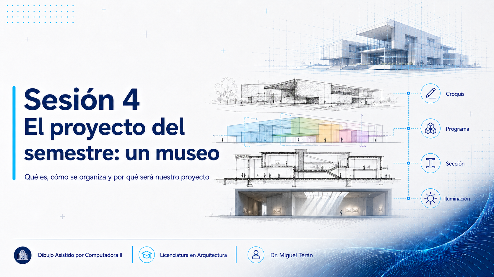
Objetivos de esta sesión
Al terminar podrás:
- Usar la definición vigente de museo (ICOM, 2022) y reconocer qué exige que no exigía la anterior.
- Distinguir museología de museografía y saber cuál de las dos te toca como arquitecto.
- Acordar en equipo la misión de su museo y derivar de ella necesidades espaciales concretas.
- Explicar por qué el daño por luz es dosis (intensidad × tiempo) y qué implica para el proyecto de la sala.
En la Sesión 2 vimos la idea grande (de dibujar a modelar información) y en el taller pasado (S3) leíste un museo real. Hoy conocemos a fondo ese tipo de edificio: qué es un museo, cómo se organiza por dentro y por qué es tan rico para aprender. Vas a reconocer, con nombre propio, mucho de lo que observaste en tu precedente.
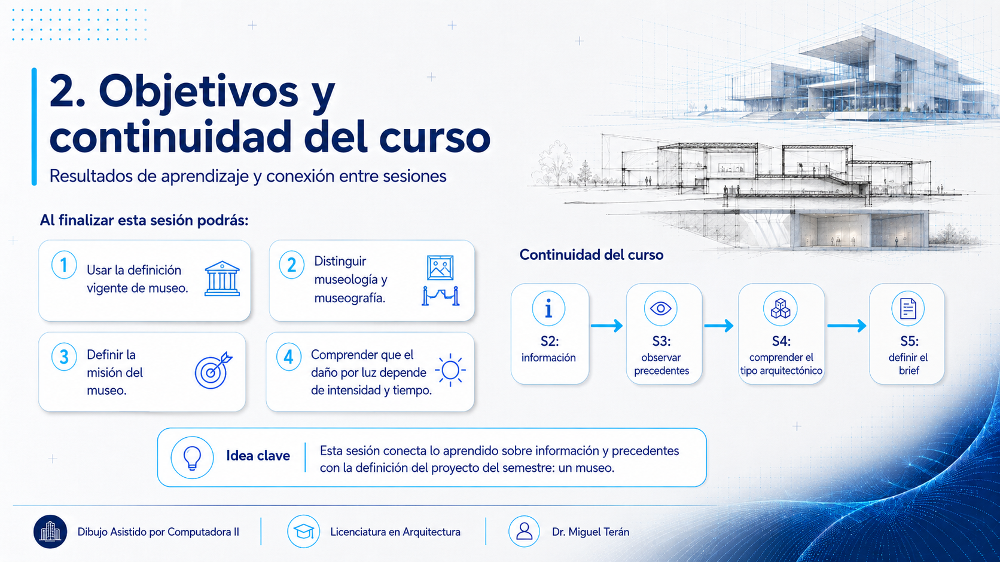
¿Qué es un museo?
Museo
«Un museo es una institución sin ánimo de lucro, permanente y al servicio de la sociedad, que investiga, colecciona, conserva, interpreta y exhibe el patrimonio material e inmaterial. Abiertos al público, accesibles e inclusivos, los museos fomentan la diversidad y la sostenibilidad. Con la participación de las comunidades, los museos operan y comunican ética y profesionalmente, ofreciendo experiencias variadas para la educación, el disfrute, la reflexión y el intercambio de conocimientos» (ICOM, 2022).
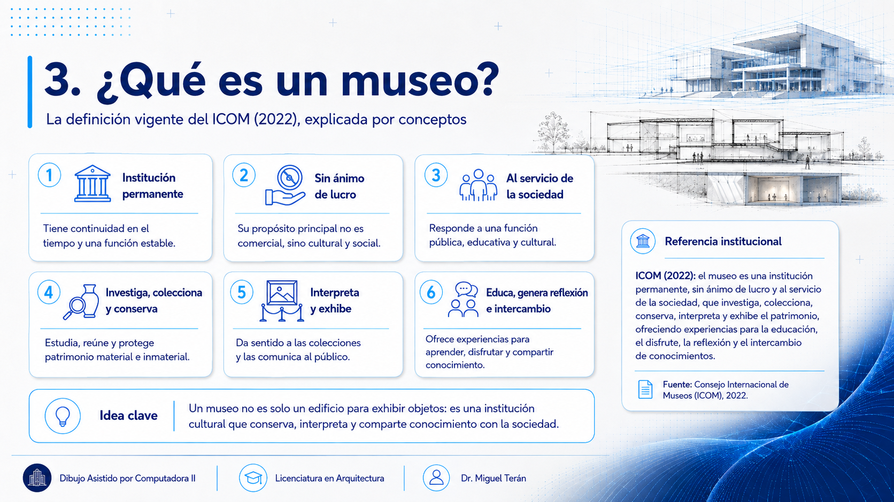
Por qué esta definición y no otra
Es la definición vigente del Consejo Internacional de Museos, aprobada en Praga el 24 de agosto de 2022 tras un proceso de consulta de dos años. Sustituye a la anterior, de 2007, y no es un cambio cosmético: incorpora cuatro conceptos que antes no estaban (accesibilidad, inclusión, participación comunitaria y sostenibilidad) y los coloca al mismo nivel que conservar y exhibir.
El texto de arriba es la versión oficial en español publicada por el ICOM. Si la citas en un trabajo, cópiala tal cual y no la retraduzcas del inglés: una definición institucional se cita literalmente o se declara como paráfrasis. Fuente: icom.museum.
Para ti esto tiene una consecuencia directa: un museo accesible no se resuelve añadiendo una rampa al final. La accesibilidad es también sensorial y cognitiva, y la participación de la comunidad es un requisito programático, no un adorno. Tenlo presente cuando definas tu brief en la Sesión 5.
Para proyectar un museo conviene distinguir dos palabras que se confunden. La museología es la ciencia del museo: estudia su función social, cómo se organiza y qué papel juega en la vida de la comunidad. La museografía es el conjunto de técnicas para exhibir: cómo se ordena el recorrido, cómo se montan e iluminan las obras y cómo se protege el acervo (Plazola, 1999). Como arquitectos, trabajaremos sobre todo la segunda: diseñamos el espacio para que la museografía funcione.
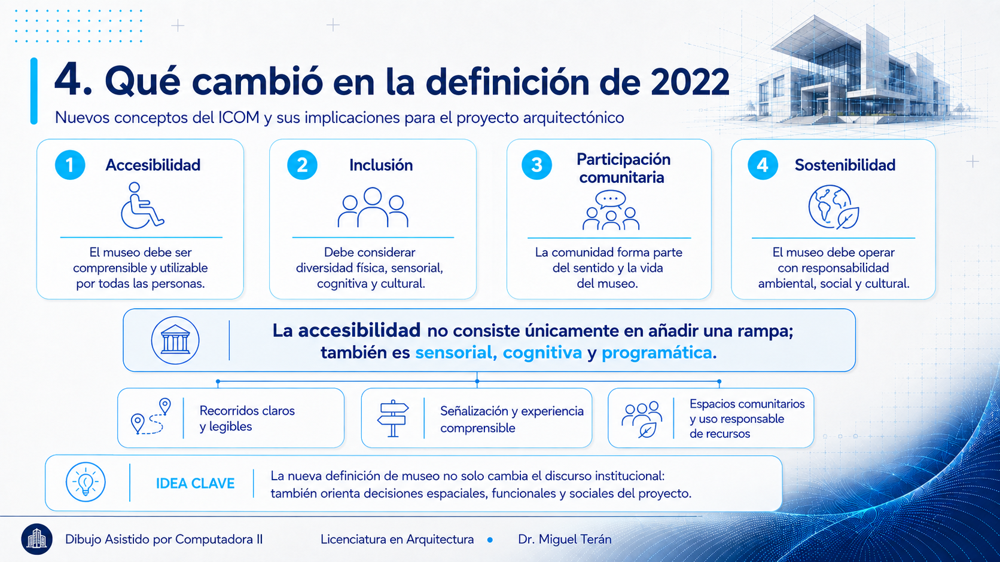
Una breve historia
El museo no siempre fue público. Nació de las colecciones privadas (gabinetes de curiosidades, acervos de reyes y academias) que con el tiempo se abrieron a todos. En México, el hilo va de la colección de Boturini en el siglo xviii y la Academia de San Carlos (1783, considerada el primer museo de arte de América) al Museo Nacional, y de ahí a la profesionalización del siglo xx (Plazola, 1999). Hoy, como plantea Montaner (2003), el museo es uno de los tipos arquitectónicos más significativos de nuestro tiempo: dejó de ser una caja cerrada para volverse un edificio cultural y cívico, muchas veces el corazón de la vida de una ciudad.
Tipos de museo
Los museos se clasifican, sobre todo, por lo que exhiben. Entre los más comunes:
- De arte: pintura, escultura, arte moderno y contemporáneo (galerías).
- De historia y antropología: objetos y culturas del pasado.
- De ciencia y tecnología: por lo general interactivos.
- De sitio y arqueológicos: ligados a un lugar o un hallazgo.
- Especializados y comunitarios: un tema, una colección o una comunidad concreta.
Nuestro proyecto se acerca a este último grupo: un museo pequeño, con vocación educativa y cultural, pensado para una comunidad.
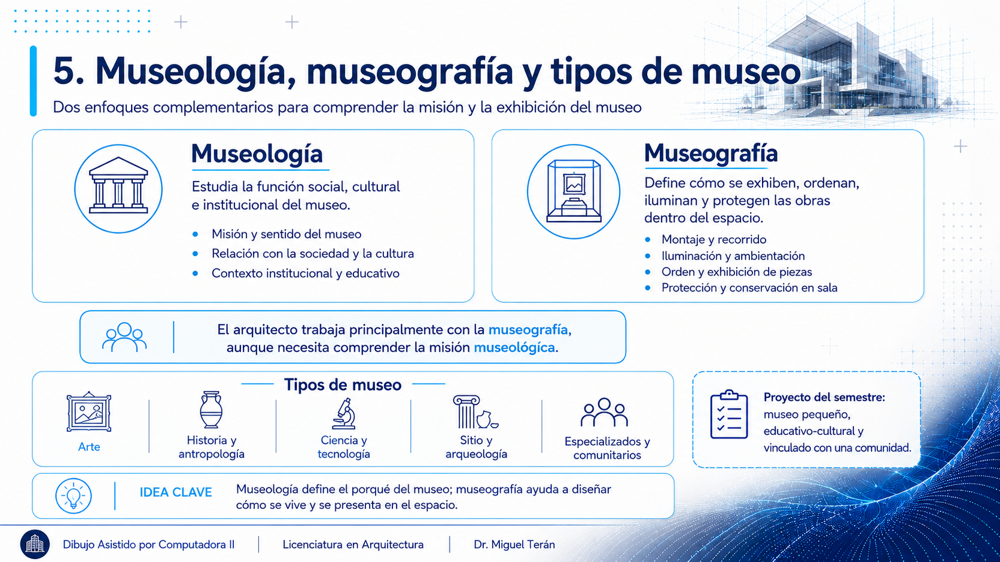
El museo como experiencia: luz, recorrido y escala
Lo que distingue a un museo de casi cualquier otro edificio es que su arquitectura forma parte de lo que se exhibe. Montaner (2003) insiste en esta idea: la luz, el recorrido, la escala y el encuentro con el objeto son la experiencia cultural misma. Diseñar un museo es, a la vez, diseñar el edificio y diseñar cómo se vive por dentro.
La museografía lo traduce en decisiones concretas: las salas de exposición piden dimensiones generosas (Plazola menciona muros del orden de 4 a 10 m de ancho por 2.5 a 3.5 m de altura); el recorrido guía al visitante en una secuencia con pausas y descansos; y las obras se montan sobre muros, mamparas y vitrinas. Pero, sobre todo, está la luz: natural filtrada y controlada, o artificial dirigida sobre cada pieza. El arquitecto se vuelve, como dice Plazola (1999), colaborador del artista para dar realce a la obra.
La luz es proyecto, no adorno
En un museo, iluminar no es "poner lámparas al final": es una decisión de diseño desde el principio. Guarda esta idea, porque más adelante en el curso (al iluminar, colocar cámaras y renderizar tu modelo) la vas a aplicar directamente. Pocos edificios premian tanto ese trabajo como un museo.
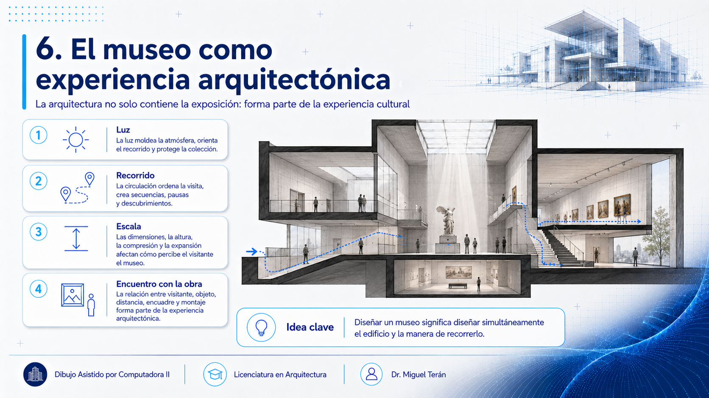
El programa de un museo
Todo museo organiza sus espacios en zonas. Conviene verlo como un iceberg: lo que el visitante recorre es solo una parte; detrás hay bodegas, talleres y laboratorios que casi nadie ve. Este es el esquema general del que partiremos (Plazola, 1999); el nuestro, a su escala, lo definiremos en la Sesión 5.
| Zona | Qué incluye |
|---|---|
| Acceso y atención al público | Vestíbulo y recepción, taquilla e información, guardarropa, sanitarios, tienda o librería, cafetería. |
| Exposición | Salas permanentes y temporales, áreas de descanso y las circulaciones que enlazan el recorrido (rampas, escaleras, elevadores). |
| Programa educativo-cultural | Aulas y talleres didácticos, auditorio o sala de usos múltiples, biblioteca o mediateca. |
| Acervo y conservación | Bodega de obra, registro, área de restauración y laboratorios, zona de carga y descarga. |
| Administración | Dirección y oficinas, servicios educativos, relaciones públicas, sala de juntas. |
| Servicios generales | Cuartos de máquinas, mantenimiento e instalaciones, casilleros, aseo y seguridad. |
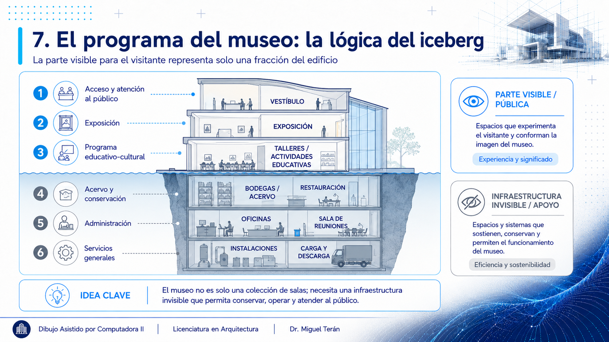
Lo que hace único a un museo: requerimientos técnicos
Un museo carga exigencias que otros edificios no tienen (Plazola, 1999):
- Clima controlado: humedad y temperatura estables en salas y bodegas para no dañar las obras.
- Iluminación cuidada: filtrar la luz natural y dirigir la artificial sobre cada pieza, sin deteriorarla.
- Seguridad: contra incendio (detectores, aspersores, extintores) y contra robo (alarmas y circuito cerrado).
Estas exigencias son, en buena parte, lo que vuelve al museo un ejercicio de proyecto tan completo.
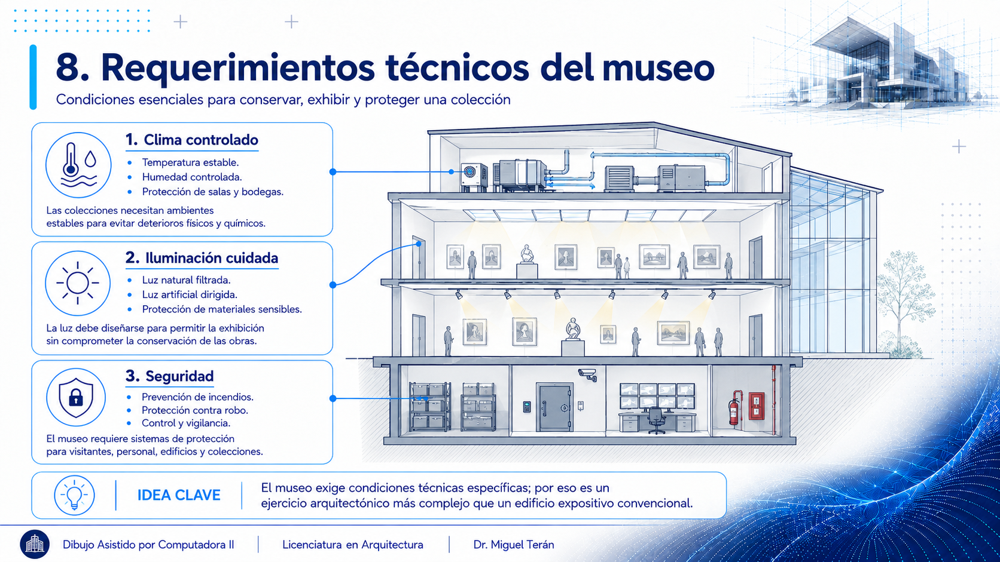
Cuánta luz tolera una obra
«Iluminación cuidada» suena vago hasta que se entiende de dónde viene el límite. La luz degrada los materiales: decolora pigmentos, amarillea el papel, fragiliza las fibras textiles. Y el daño es acumulativo e irreversible. Por eso la conservación no pide «poca luz» sino una cantidad concreta según lo que se exhibe.
El daño es dosis, no intensidad
La regla que debes retener es esta: el deterioro depende de la intensidad multiplicada por el tiempo de exposición.
dosis = lux × horas
Como primera aproximación: una acuarela a 50 lux durante 100 horas recibe una exposición equivalente a 100 lux durante 50 horas. De ahí se sigue algo que cambia el proyecto: la exposición acumulada se gestiona combinando iluminancia y tiempo. Una pieza sensible puede rotarse a bodega, mostrarse por temporadas o exhibirse en una sala que se oscurece cuando nadie la recorre. Esa es una de las razones por las que existen las salas temporales, junto con la programación curatorial y los préstamos.
Hasta dónde llega esta regla
La equivalencia entre intensidad y tiempo es un modelo de gestión, no una ley exacta. No la leas como permiso para subir la iluminancia siempre que acortes la exposición: los niveles máximos por material siguen siendo un techo, y el deterioro depende también de la composición espectral de la luz, de la radiación ultravioleta e infrarroja, del estado de conservación de la pieza, de la temperatura y la humedad, y de cuánta luz haya recibido esa obra a lo largo de su vida.
Lo que sí debes llevarte: el tiempo cuenta. Un proyecto que solo controla cuántos lux entran, sin pensar cuántas horas al año, ha resuelto media pregunta.
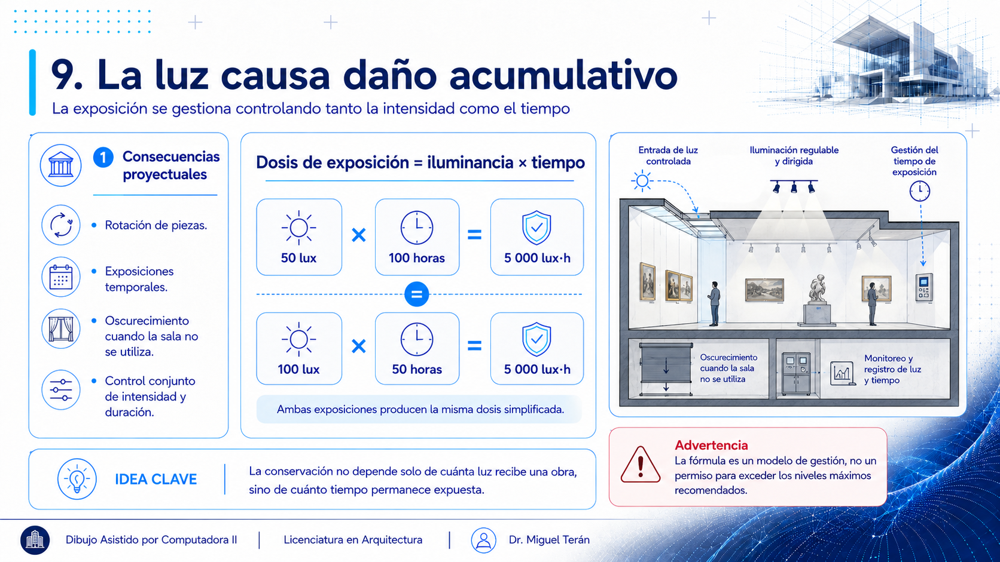
| Sensibilidad | Materiales | Nivel |
|---|---|---|
| Muy sensible | Acuarela, papel, obra gráfica, textiles, fotografía, tintes | ≈50 lux |
| Medianamente sensible | Óleo, acrílico, policromía, madera, mobiliario, hueso | ≈150–200 lux |
| Poco sensible | Piedra, metal, cerámica, vidrio | ≈300 lux |
Cómo tratar estas cifras
Son recomendaciones de conservación, no normativa: provienen del estándar de Garry Thomson y de las guías del Instituto Canadiense de Conservación. Márcalas como P en tu brief y cita la fuente si las usas.
Sobre el límite anual acumulado (lux·hora al año) las guías internacionales no coinciden entre sí. Por eso aquí aprendes el principio (dosis) y no una cifra única: si algún día necesitas el número exacto, se consulta a la fuente de conservación aplicable al préstamo, no a un apunte.
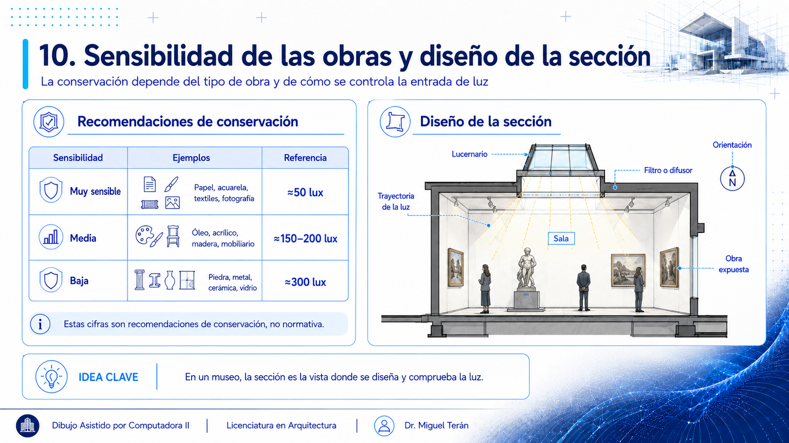
Dónde vive esta decisión: en la sección
Fíjate en lo que acabas de aprender: si la sala de obra sobre papel no puede pasar de ~50 lux, eso determina el tamaño del lucernario, su orientación y qué lo filtra. Y esas tres cosas se deciden y se dibujan en sección, no en planta.
Es el motivo por el que en la Sesión 6 insistiremos en que, en un museo, la sección es la vista de la luz; y por el que en el Parcial 3, al iluminar y renderizar tu modelo, estarás comprobando lo que tu sección prometió aquí.
Nuestro proyecto: un museo pequeño con programa educativo-cultural
No haremos un gran museo nacional. Trabajaremos un museo pequeño en el que el programa educativo-cultural pesa tanto como la exposición: junto a sus salas tendrá talleres, un espacio para actividades o auditorio, biblioteca o mediateca y áreas para la comunidad, en un sitio local (en Tijuana). Es un edificio a la medida de un semestre y, a la vez, lo bastante rico para tocar todo lo que enseña este curso: muros, pisos, cubiertas, muro cortina, escaleras y rampas, estructura, iluminación, cámaras y render.
Este curso son los cimientos
Aquí construyes la base: el proyecto, su representación y su modelo digital. Esa base no muere en el examen final (es el punto de partida que seguirás desarrollando más adelante en tu formación). Piensa todo lo que hagas este semestre como el cimiento de algo más grande.
Tu tarea para la próxima sesión
Vuelve al museo que analizaste en el taller (S3) y pregúntate qué de él quisieras para el tuyo: ¿la luz, el recorrido, la escala, los materiales? Trae esas ideas anotadas. Con ellas arrancamos la Sesión 5, donde definimos nuestro proyecto: programa a la medida, sitio y primeras decisiones.
Comprobación de logro
En equipo, redacten en dos frases la misión del museo que van a proyectar. Una sola misión por equipo: acordarla ya es parte del trabajo, porque obliga a decidir qué hace ese museo y para quién antes de discutir un solo metro cuadrado.
Después, cada integrante por separado deriva de esa misión tres espacios y dos relaciones entre ellos, y comparan. Si de la misión no se desprende ningún espacio, todavía es un adorno y no un encargo: reescríbanla. Y si de la misma misión salen tres listas muy distintas, es que está demasiado vaga.
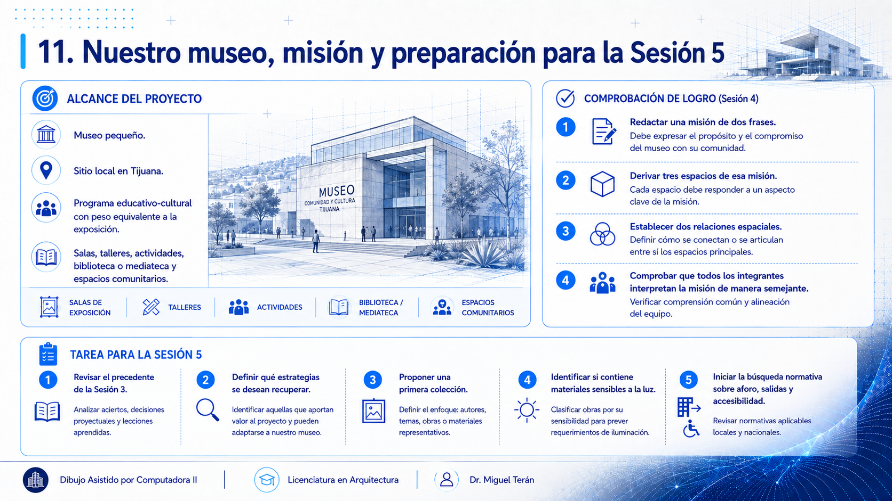
Tarea para la Sesión 5 (empiécenla hoy, no el día del taller)
La S5 es la sesión más densa del parcial: se cierra el encargo, el programa, el aforo, el sitio y el partido. Para que rinda, lleguen con esto hecho:
- La misión acordada en equipo y las listas individuales de espacios.
- Una primera idea de la colección: qué conserva o exhibe su museo, y si hay material sensible a la luz. De eso dependen los lux que acaban de estudiar.
- Empiecen la búsqueda normativa. En la S5 necesitarán los umbrales de aforo, salidas y accesibilidad del Reglamento de la Ley de Edificaciones para el Municipio de Tijuana (Título III, Secciones IV y V). Búsquenlos en el texto vigente y traigan lo que encuentren, aunque esté incompleto.
Sobre lo tercero, con franqueza: no se resuelve en cinco minutos. El reglamento es largo, los requisitos están repartidos entre secciones y circulan compilaciones que no coinciden con el texto oficial. Por eso se empieza hoy y no el día del taller. En clase resolvemos las dudas, no la búsqueda entera.
Referencias
- Canadian Conservation Institute. Agent of deterioration: light, ultraviolet and infrared. Gobierno de Canadá. Recuperado de canada.ca. [Niveles de iluminancia y daño acumulado.]
- ICOM. (2022). Definición de museo. Aprobada en la 26.ª Asamblea General Extraordinaria, Praga, 24 de agosto de 2022. Consejo Internacional de Museos. Recuperado de icom.museum.
- Montaner, J. M. (2003). Museos para el siglo XXI. Editorial Gustavo Gili.
- Plazola Cisneros, A., Plazola Anguiano, A. y Plazola Anguiano, G. (1999). Museo y galería. En Enciclopedia de arquitectura Plazola (Vol. 8, M–O). Plazola Editores.
Qué sigue: Sesión 5, taller: el brief del museo (programa, sitio y partido).